3 Preliminary Analysis
Now we have the clean data let’s summarise the main variables.
3.1 Trial summary statistics
The data explored in the PM_MB_dat data frame is a clean data frame focusing on trials which met the selection criteria testing DMI fungicides (tebuconazole / propiconazole) or no spray controls.
3.1.1 Trial seasons
How many trials were undertaken each season.
PM_MB_dat %>%
distinct(trial_ref, location, year) %>%
arrange(year) %>%
group_by(year) %>%
summarise(n = n())%>%
flextable()year | n |
2011 | 2 |
2012 | 2 |
2013 | 4 |
2015 | 1 |
2016 | 2 |
2017 | 2 |
2018 | 1 |
2019 | 2 |
3.1.2 Trial locations
The location of the trials including DMI fungicides.
PM_MB_dat %>%
distinct(trial_ref, location, year) %>%
group_by(location) %>%
summarise(n = n())%>%
flextable()location | n |
Gatton | 1 |
Goolhi | 1 |
Hermitage | 6 |
Kingaroy | 3 |
Marys Mount | 1 |
Millmerran | 1 |
Missen Flats | 1 |
Premer | 1 |
Wellcamp | 1 |
3.1.3 Powdery mildew severity and mungbean grain yield summary per trial
Show a summary of both powdery mildew severity and mungbean grain yield means and ranges for all trials including DMI fungicides.
Sev_yield_table <-
PM_MB_dat %>%
mutate(PM_sev_control = case_when(fungicide_ai == "control" ~ PM_final_severity,
TRUE ~ NA_real_)) %>%
mutate(PM_sev_treat = case_when(fungicide_ai != "control" ~ PM_final_severity,
TRUE ~ NA_real_)) %>%
mutate(PM_y_control = case_when(fungicide_ai == "control" ~ grain_yield.t.ha.,
TRUE ~ NA_real_)) %>%
mutate(PM_y_treat = case_when(fungicide_ai != "control" ~ grain_yield.t.ha.,
TRUE ~ NA_real_)) %>%
mutate(trial_ref = str_remove(trial_ref, "mung")) %>% # remove "mung" prefix from trial_ref
group_by(trial_ref,
location,
year,
planting_date,
first_sign_disease) %>%
summarise(
n = n(),
m_PM_sev_control = round(median(PM_sev_control, na.rm = TRUE), digits = 2),
n_controls = sum(is.na(PM_sev_control) == FALSE),
min_PM_sev = round(min(PM_sev_treat, na.rm = TRUE), digits = 2),
max_PM_sev = round(max(PM_sev_treat, na.rm = TRUE), digits = 2),
m_PM_yield_control = round(mean(PM_y_control, na.rm = TRUE), digits = 3),
min_PM_yield = round(min(PM_y_treat, na.rm = TRUE), digits = 3),
max_PM_yield = round(max(PM_y_treat, na.rm = TRUE), digits = 3),
.groups = "drop"
) %>%
arrange(year) %>%
mutate(PM_sev_range = paste(min_PM_sev, max_PM_sev, sep = " - ")) %>%
mutate(yield_range = paste(min_PM_yield, max_PM_yield, sep = " - ")) %>%
mutate(m_PM_sev_control = paste(m_PM_sev_control, " (", n_controls, ")", sep = "")) %>%
select(-c(min_PM_sev, max_PM_sev, min_PM_yield, max_PM_yield, n_controls)) %>%
select(c(1:7, 9, 8, 10)) %>% # order columns
flextable() %>%
set_header_labels(
trial_ref = "Trial code",
location = "Location",
year = "Year",
planting_date = "Sowing date",
first_sign_disease = "PM onset",
n = "n",
m_PM_sev_control = "Control median\nPM severity",
PM_sev_range = "PM severity\nrange",
m_PM_yield_control = "Control\nmean yield",
yield_range = "Yield range\n(t / ha)"
) %>%
fontsize(size = 8, part = "body") %>%
fontsize(size = 10, part = "header") %>%
align(j = 3:10, align = "center", part = "all") %>%
autofit() %>%
width(j = 7:10, width = 1) %>%
width(j = 3, width = 0.5) %>%
set_caption(
"Table 1: Mean yield and severity for trials included in the meta-analysis. Powdery mildew (PM) onset date, number of treatments per trial (n), PM median plot severity of the non-fungicide treated plots and the severity range in fungicide treatments, bracketed numbers refer to the number of pooled control treatments summarised; Mean yield in non-fungicide treated control and the range of yields in the fungicide treatments in tonnes per hectare"
)
Sev_yield_tableTrial code | Location | Year | Sowing date | PM onset | n | Control median | PM severity | Control | Yield range |
1011/01 | Hermitage | 2011 | 2011-01-24 | 2011-03-28 | 4 | 4.83 (2) | 2 - 2.33 | 1.525 | 1.544 - 1.769 |
1011/02 | Kingaroy | 2011 | 2011-02-02 | 2011-03-22 | 6 | 7.83 (2) | 3.33 - 5.33 | 0.798 | 0.73 - 1.059 |
1112/01 | Gatton | 2012 | 2012-02-20 | 2012-04-02 | 7 | 7.5 (1) | 2 - 6.3 | 0.738 | 0.81 - 0.948 |
1112/02 | Kingaroy | 2012 | 2012-02-03 | 2012-03-12 | 7 | 8 (1) | 1.7 - 8 | 0.751 | 1.036 - 1.323 |
AM1303 | Premer | 2013 | 2012-12-28 | 2013-02-28 | 4 | 8 (1) | 2 - 7.83 | 1.422 | 1.334 - 1.45 |
AM1304 | Marys Mount | 2013 | 2012-12-24 | 2013-03-16 | 2 | 3 (1) | 3.17 - 3.17 | 1.094 | 1.265 - 1.265 |
AM1305 | Goolhi | 2013 | 2013-01-23 | 2013-03-25 | 4 | 7 (1) | 1 - 3.75 | 0.694 | 0.604 - 0.722 |
BB1305 | Millmerran | 2013 | 2013-01-12 | 2013-03-13 | 4 | 8 (1) | 1.62 - 8 | 0.802 | 0.744 - 0.803 |
1415/01 | Hermitage | 2015 | 2015-01-19 | 2015-03-16 | 5 | 7.8 (1) | 5.4 - 6.6 | 2.045 | 2.018 - 2.176 |
1516/01 | Hermitage | 2016 | 2016-02-03 | 2016-03-08 | 7 | 8 (1) | 3 - 7.5 | 1.803 | 2.141 - 2.37 |
1516/02 | Kingaroy | 2016 | 2016-02-11 | 2016-03-09 | 7 | 8.25 (1) | 2.25 - 7.75 | 0.811 | 0.873 - 1.034 |
1617/01 | Hermitage | 2017 | 2017-02-13 | 2017-03-24 | 39 | 8 (9) | 5.33 - 8 | 0.476 | 0.327 - 0.683 |
1617/02 | Missen Flats | 2017 | 2017-01-27 | 2017-03-07 | 39 | 9 (9) | 7.67 - 9 | 1.561 | 1.13 - 2.526 |
1718/01 | Wellcamp | 2018 | 2018-02-13 | 2018-03-21 | 18 | 8.17 (6) | 5.67 - 7.67 | 1.194 | 1.084 - 1.69 |
1819/01 | Hermitage | 2019 | 2018-02-04 | 2018-04-12 | 4 | 7.5 (1) | 5 - 7.17 | 0.587 | 0.543 - 0.571 |
1819/02 | Hermitage | 2019 | 2018-02-18 | 2018-04-12 | 4 | 7.83 (1) | 4.6 - 7.33 | 0.289 | 0.276 - 0.312 |
3.1.4 Summary plots
3.1.4.1 Seasonal disease pressure
sev_control_plot <-
PM_MB_dat %>%
filter(fungicide_ai == "control") %>%
ggplot(aes(x = year, y = PM_final_severity)) +
geom_boxplot(outlier.alpha = 0) +
geom_jitter(size = 2, colour = "cadetblue",alpha = 0.4,width = 0.15) +
scale_y_continuous(breaks = c(1,3,5,7,9), limits = c(0.9,9.1)) +
ylab("PM severity (1 -9)")+
# xlab("Crop season")+
# theme(axis.title.x=element_blank(),
# axis.text.x=element_blank(),
# axis.ticks.x=element_blank())+
ggtitle("A")
sev_control_plot 
3.1.4.2 Disease severity range for each spray schedule
sev_schedule_plot <-
PM_MB_dat %>%
ggplot(aes(x = spray_management, y = PM_final_severity)) +
geom_boxplot(outlier.alpha = 0) +
geom_jitter(
size = 2,
colour = "cadetblue",
alpha = 0.4,
width = 0.15
) +
scale_y_continuous(breaks = c(1, 3, 5, 7, 9), limits = c(0.9, 9.1)) +
scale_x_discrete(labels = c(
"control",
"early",
"late",
"late+",
"recommended",
"recomended+"
)) +
ylab("PM severity (1 -9)") +
# xlab("Spray Schedule")+
ggtitle("B")
sev_schedule_plot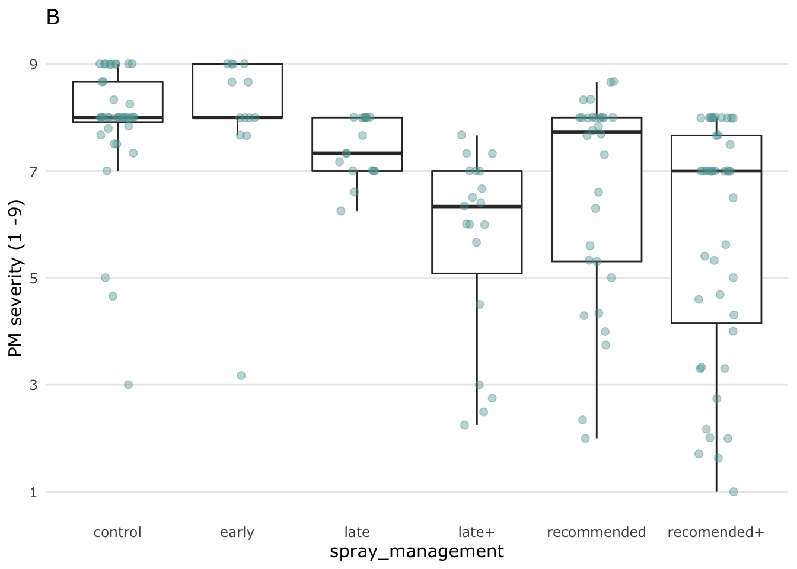
3.1.4.3 Seasonal grain yield
Y_control_plot <-
PM_MB_dat %>%
filter(fungicide_ai == "control") %>%
ggplot(aes(x = year, y = grain_yield.t.ha.)) +
geom_boxplot() +
geom_jitter(
size = 2,
colour = "coral",
alpha = 0.4,
width = 0.15
) +
scale_y_continuous(breaks = seq(0, 2.5, by = 0.5), limits = c(0, 2.6)) +
ylab(bquote('Mungbean grain yield ' * ~ ~ t ~ ha ^ -1 * "")) +
xlab("Crop season") +
theme(axis.text.x = element_text(angle = 20, hjust = 0.75),
plot.margin = margin(0.2, 0, 0.71, 0, "cm"),
axis.title.x = element_text(vjust = -5))
Y_control_plot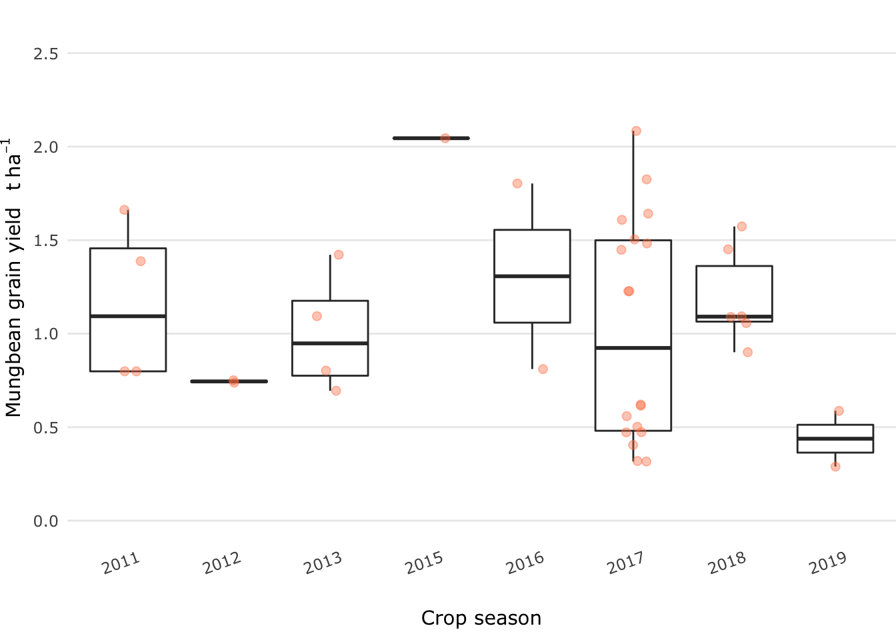
3.1.4.4 Mungbean yield for each spray schedule
Y_schedule_plot <-
PM_MB_dat %>%
ggplot(aes(x = spray_management, y = grain_yield.t.ha.)) +
geom_boxplot(outlier.alpha = 0) +
geom_jitter(
size = 2,
colour = "coral",
alpha = 0.4,
width = 0.15
) +
scale_y_continuous(breaks = seq(0, 2.5, by = 0.5), limits = c(0, 2.6)) +
scale_x_discrete(labels = c(
"control",
"early",
"late",
"late+",
"recommended",
"recomended+"
)) +
#ylab(bquote('Mungbean grain yield ' * ~ ~ t ~ ha ^ -1 * "")) +
xlab("Spray Schedule")+
theme(
axis.title.y = element_blank(),
axis.text.x = element_text(angle = 20, hjust = 0.75))
Y_schedule_plot
#library(gridExtra)
# save plots into a 4 x 4 grid for publication
p4 <- arrangeGrob(
sev_control_plot + theme(
axis.title.x = element_blank(),
axis.text.x = element_blank(),
axis.title.y = element_blank()
),
sev_schedule_plot + theme(
axis.title.x = element_blank(),
axis.text.x = element_blank(),
axis.title.y = element_blank()
),
Y_control_plot,
Y_schedule_plot
)
ggsave(
filename = "paper/figures/Fig1_boxplots_yield&sev.tiff",
plot = p4,
device = "tiff",
height = 6,
width = 7,
dpi = 300,
units = "in"
)
Box plots of the unsprayed control treatments means for both PM severity (top) and crop yield (bottom), indicating within-season variation (A), and trial treatment means for each spray schedule (B).
3.2 Treatment focused summaries
Various factors have been studied in the collated trials which may influence the subsequent meta-analysis. A quick inspection of the following factors were done to examine the possible influence these variables may have on on mungbean grain yield and/or powdery mildew mean plot severity.
- Fungicide type (propiconazole and tebuconazole)
- Fungicide Doses
- Number of fungicide sprays
- Host cultivar (probably is a co-variate with season due to changing cultivars over time)
- Row spacing
- Final disease rating / disease pressure
- Moisture availability for the crop
The data plotted below are from 16 field trials between (2011 - 2019) of which the details are described in the Trials considered for inclusion in meta-analysis.
3.2.1 Fungicide type
3.2.1.1 Powdery mildew severity
n_C <- sum(PM_MB_dat$fungicide_ai == "control")
n_P <- sum(PM_MB_dat$fungicide_ai == "propiconazole")
n_T <- sum(PM_MB_dat$fungicide_ai == "tebuconazole")
PM_MB_dat %>%
ggplot(aes(y = PM_final_severity, x = as.factor(fungicide_ai))) +
xlab("Fungicide treatment") +
ggtitle(label = "Powdery mildew severity for each fungicide active ingredient") +
labs(caption = paste("Control n:", n_C,
"; Propiconazole n:", n_P,
"; Tebuconazole n:", n_T, sep = "")) +
geom_boxplot() +
scale_fill_usq() +
scale_colour_usq()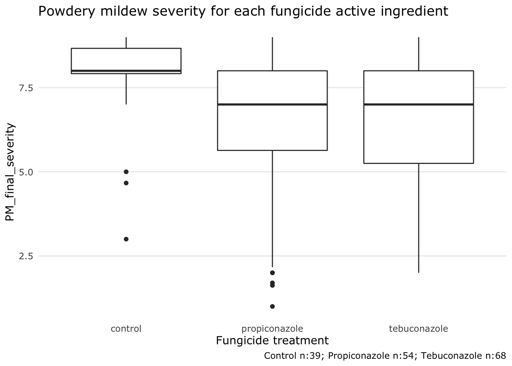
3.2.1.2 Yield effect
PM_MB_dat %>%
ggplot(aes(y = grain_yield.t.ha., x = as.factor(fungicide_ai))) +
xlab("Fungicide treatment") +
ggtitle(label = "Grain yield for each fungicide active ingredient") +
labs(caption = paste("Control n:", n_C,
"; Propiconazole n:", n_P,
"; Tebuconazole n:", n_T, sep = "")) +
geom_boxplot() +
scale_colour_usq()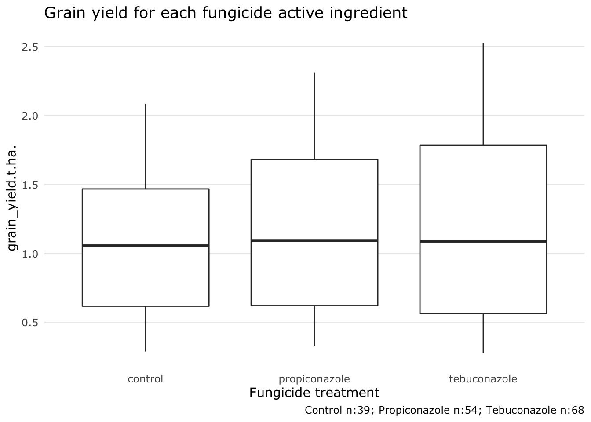
3.2.2 Fungicide Doses
This analysis focuses only the DMI fungicides, tebuconazole and propiconazole, which were trialled the most often.
We should check that all fungicide doses that were used were roughly the same, if we are to compare between trials where dose might be different.
PM_MB_dat %>%
filter(fungicide_ai == "tebuconazole" |
fungicide_ai == "propiconazole") %>%
ggplot(aes(x = as.factor(dose_ai.ha), fill = fungicide_ai)) +
xlab("Dose (g ai/ha)") +
ggtitle(label = "Total number of treatments for each respective tebuconazole\nor propiconazole dose") +
geom_bar() +
scale_fill_usq() +
scale_colour_usq()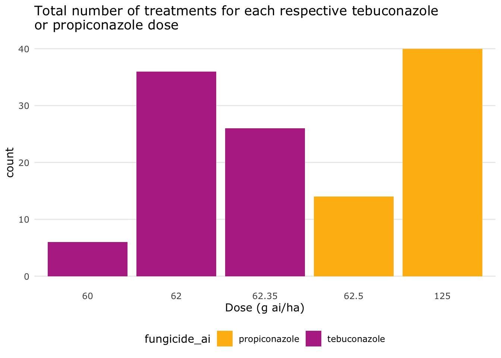
All trials that used tebuconazole used approximately the same dose. Dose of the active ingredient ranged from 62.35 g per hectare to 60 g per hectare.
Doses for propiconazole range from 62.5 to 125, a large variation.
Let’s inspect the difference in yields for each dose.
PM_MB_dat %>%
filter(fungicide_ai == "propiconazole") %>%
ggplot(aes(x = relevel(as.factor(dose_ai.ha), "62.5"), y = grain_yield.t.ha.)) +
xlab("Dose (g ai/ha)") +
labs(label = "Yield for each respective propiconazole dose",
caption = "Facets indicate the number of applications") +
geom_boxplot(fill = usq_cols("usq charcoal"), alpha = 0.5) +
ylab("Grain yield t / ha") +
facet_grid(cols = vars(total_fungicide))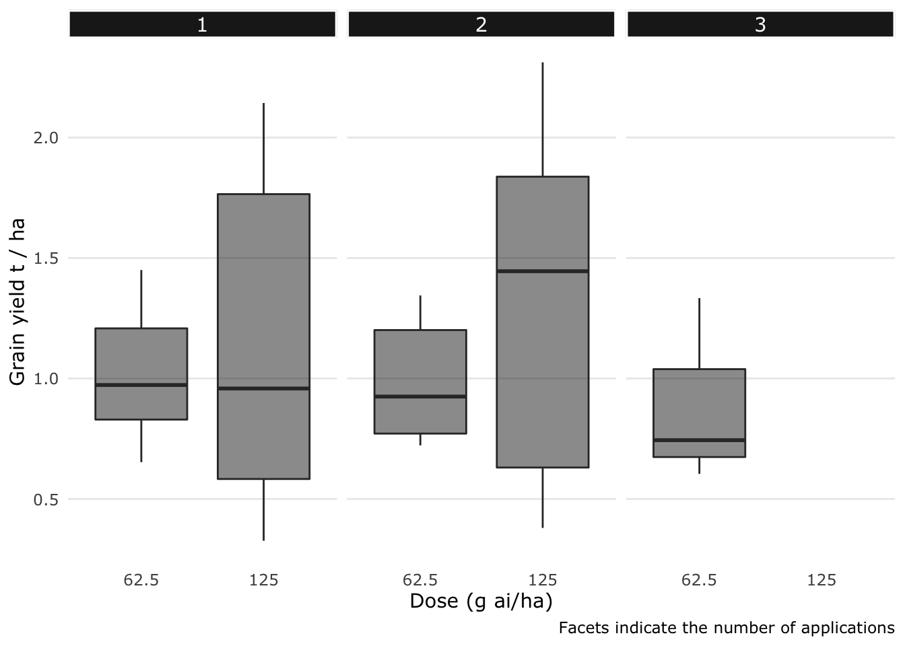
This dose effect should be acknowledged in the meta-analysis.
How many treatments of each dose have been investigated per trial?
table(as.character(PM_MB_dat[PM_MB_dat$fungicide_ai == "propiconazole",]$trial_ref),
PM_MB_dat[PM_MB_dat$fungicide_ai == "propiconazole",]$dose_ai.ha)##
## 62.5 125
## AM1303 3 0
## AM1304 1 0
## AM1305 3 0
## BB1305 3 0
## mung1112/01 2 2
## mung1112/02 2 2
## mung1617/01 0 15
## mung1617/02 0 15
## mung1718/01 0 6
3.2.3 Number of fungicide sprays
Inspect the frequency of sprays per fungicide.
##
## 0 1 2 3
## control 39 0 0 0
## propiconazole 0 26 25 3
## tebuconazole 0 34 32 2Very few treatments were sprayed more than three times and only in AM1305, AM1303, BB1305, mung1516/01, mung1516/02
3.2.4 Mungbean cultivars
Australian mungbean varieties have the following resistance to powdery mildew.
Berken: Highly susceptible
Crystal: Susceptible
Jade: Moderately susceptible
Let’s view a stacked bar plot of the number of sprays for both demethylation inhibitors, tebuconazole and propiconazole against each cultivar.
PM_MB_dat %>%
filter(fungicide_ai == "tebuconazole" |
fungicide_ai == "propiconazole") %>%
group_by(host_genotype, fungicide_ai, trial_ref) %>%
summarise() %>%
count() %>%
rename(Treatments = n) %>%
ggplot(aes(x = host_genotype, y = Treatments, fill = fungicide_ai)) +
xlab("Cultivar") +
ylab("N Trials") +
ggtitle(label = "Cultivars used in either tebuconazole or propiconazole trials") +
geom_col() +
scale_fill_usq(name = "Fungicide AI")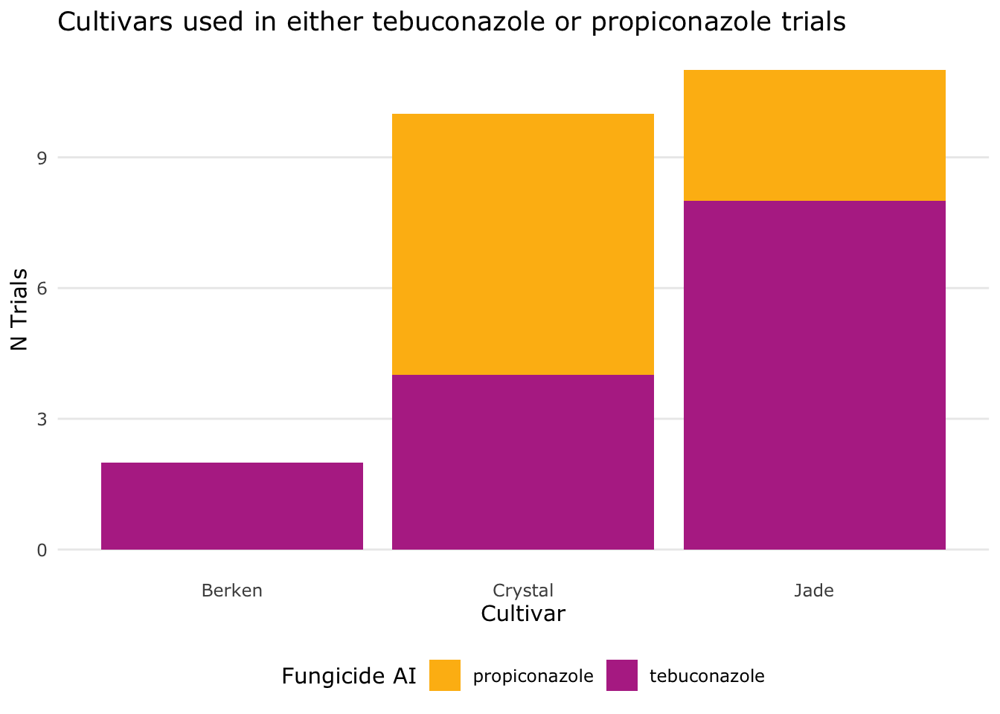
3.2.4.1 Yield loss in cultivar Jade
Mungbean Jade shows the best quantitative resistance to powdery mildew.
Based on a GRDC report by Sue Thompson (2016) we want to know what the yield loss was in on cultivar Jade in the 2016 Trials.
PM_MB_dat %>%
filter(year == "2016",
host_genotype == "Jade") %>%
mutate(Treatment = case_when(fungicide_ai == "control" ~ "control_yield",
TRUE ~ "FungicideTreated_yield")) %>%
group_by(location, Treatment) %>%
summarise(
trial_ref = trial_ref,
location = location,
year = year,
Yield = mean(grain_yield.t.ha., na.rm = TRUE),
.groups = "drop"
) %>%
distinct() %>%
pivot_wider(names_from = Treatment, values_from = Yield) %>%
mutate(Diff = FungicideTreated_yield - control_yield) %>%
mutate(percent = (Diff / FungicideTreated_yield) * 100) %>%
select(trial_ref,
location,
year,
control_yield,
FungicideTreated_yield,
percent,
Diff) %>%
flextable()trial_ref | location | year | control_yield | FungicideTreated_yield | percent | Diff |
mung1516/01 | Hermitage | 2016 | 1.8029 | 2.2821833 | 21.00109 | 0.4792833 |
mung1516/02 | Kingaroy | 2016 | 0.8107 | 0.9541167 | 15.03136 | 0.1434167 |
3.2.5 Row spacing
Some experiments were designed to investigate the effect of row spacing and plant density on powdery mildew disease as well as fungicide timing and efficacy. The results showed that the row spacing had no statistically significant effect on powdery mildew, but narrower rows in most cases increased yield significantly. This finding has also been shown by several other researchers’ work in Queensland and New South Wales as well. Eight trials used a row spacing of 0.75 meters and tebuconazole as an active ingredient (AI).
PM_MB_dat %>%
filter(fungicide_ai == "tebuconazole" |
fungicide_ai == "propiconazole") %>%
group_by(fungicide_ai, row_spacing, trial_ref) %>%
summarise() %>%
count() %>%
rename(Trials = n) %>%
ggplot(aes(x = as.factor(row_spacing), y = Trials)) +
xlab("Row Spacing (m)") +
ylab("N Trials") +
ggtitle(label = "Trial row spacing using tebuconazole") +
geom_col(aes(fill = fungicide_ai),
position = "dodge") +
scale_fill_usq(name = "Fungicide AI")## `summarise()` has grouped output by 'fungicide_ai', 'row_spacing'. You can override using the `.groups` argument.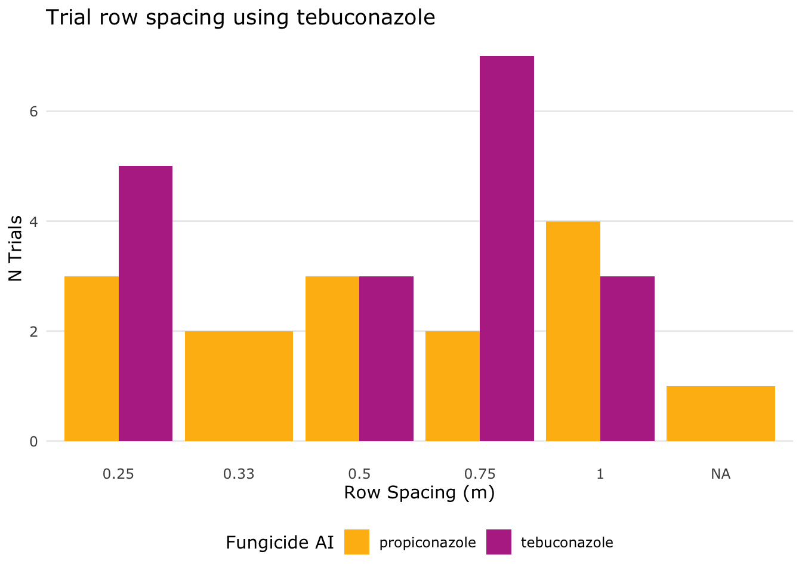
Let’s plot the row spacing treatments for the response variables, yield and disease severity.
The main questions are:
Were there any statistical differences for mungbean yield or powdery mildew severity between row spacing treatments?
- If not, can we pool certain row spacing that have no significant difference?
Let’s plot disease severity in boxplots grouped by row spacing treatment. We are asking here, which row spacing leads to the higher disease severity?
# Which row spacing leads to the higher disease severity
PM_MB_dat %>%
filter(year == 2017 |
year == 2018) %>%
filter(fungicide_ai == "control") %>%
ggplot(aes(y = PM_final_severity, x = factor(row_spacing))) +
geom_boxplot(fill = usq_cols("usq charcoal"), alpha = 0.5) +
ylab("Final severity rating") +
xlab("Row spacing (m)") +
ggtitle("Powdery mildew severity between different row spacing across all trials")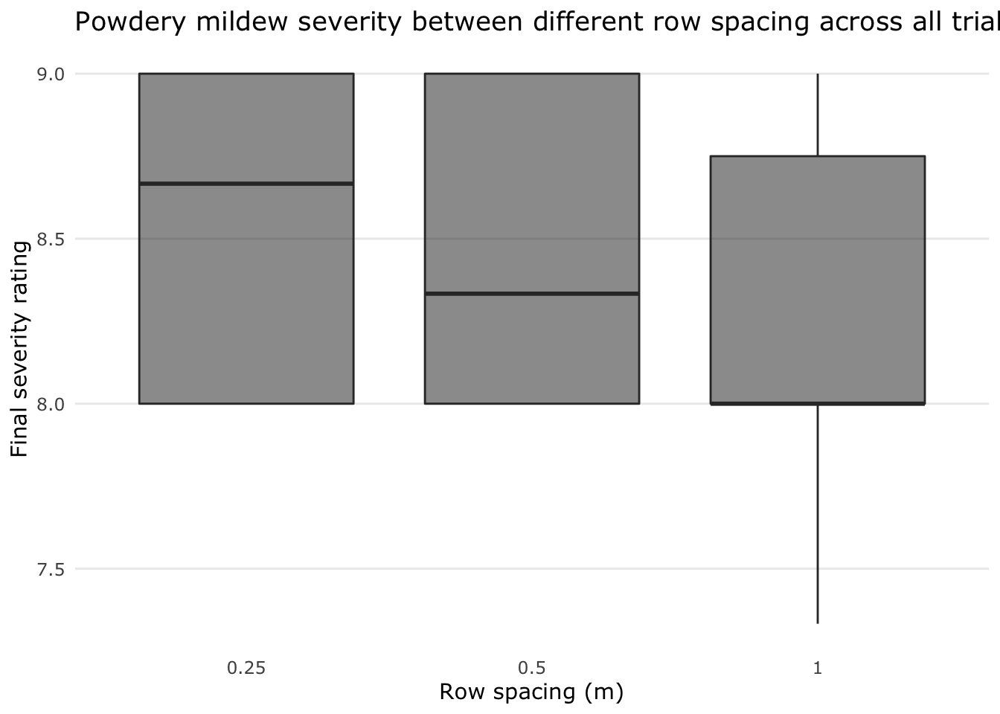
There is little difference here between the row spacing treatments, Let’s look if there is a trial location effect as disease pressure lead to varying results.
# Which row spacing leads to the higher disease severity
PM_MB_dat %>%
filter(year == 2017 |
year == 2018) %>%
filter(fungicide_ai == "control") %>%
ggplot(aes(y = PM_final_severity, x = factor(row_spacing))) +
geom_boxplot(fill = usq_cols("usq charcoal"), alpha = 0.5) +
facet_grid(cols = vars(location)) +
ggtitle("Powdery mildew variation between different row spacing") +
ylab("Final severity rating") +
xlab("Row spacing (m)")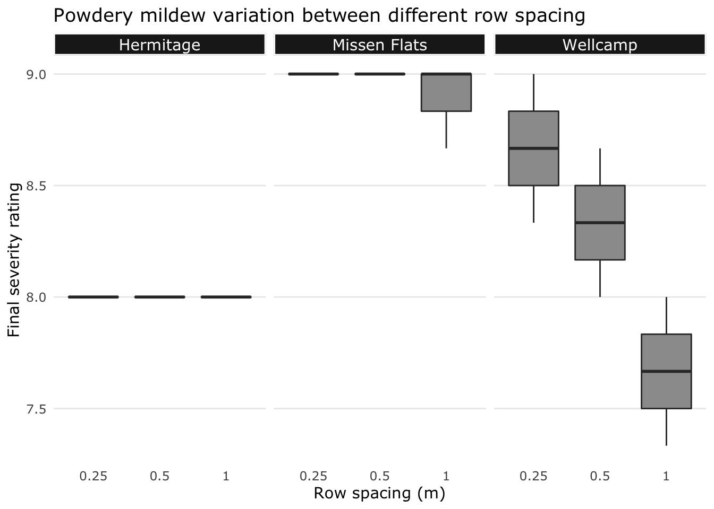
In the Wellcamp site, wider row spacing reduces PM severity, the other sites it seems there was not enough variation to make a distinction between row spacing treatments.
# Which row spacing leads to the higher yield potential
PM_MB_dat %>%
filter(year == 2017 |
year == 2018) %>%
ggplot(aes(
y = as.numeric(grain_yield.t.ha.),
x = as.factor(row_spacing),
colour = location
)) +
geom_jitter(width = 0.05) +
ggtitle("Grain yield results for different row spacing at three locations") +
xlab("Row spacing (m)") +
ylab("Grain yield (t/ha)") +
scale_colour_usq()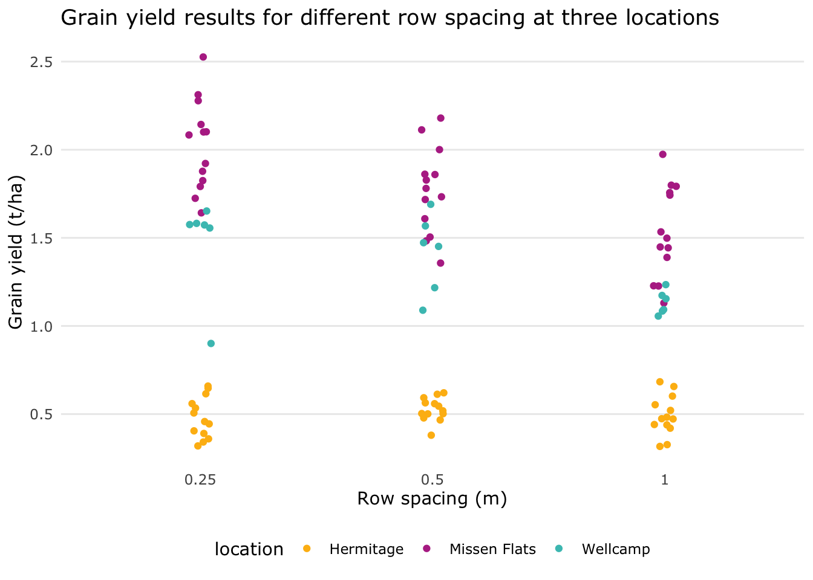
The plots seem to imply when yield is limited, presumably by other abiotic factors, there is no effect of row spacing on yield, like in the Hermitage trial. However, if the average yield is more than approximately 1 t/ha then smaller row spacing has the potential to provide greater yield per hectare.
Overall row spacing may influence both powdery mildew severity and yield. However, in the studies that were conducted, no interaction was found between row spacing, powdery mildew severity and yield. That is, the row spacing appeared to increase yield even if the amount of powdery mildew increased and no relationship could be detected between an interaction of the three.
3.2.6 Disease pressure
The amount of disease pressure between seasons is another variable which could impact mungbean yield meta-analysis effect size.
# Assess the effect of yield pressure on the spray schedule efficacy
# Quantile to separate disease pressure into High, Medium and low disease pressure categories
DP33 <-
PM_MB_dat %>%
filter(fungicide_ai == "control") %>%
pull(PM_final_severity) %>%
quantile(0.3333)
DP66 <-
PM_MB_dat %>%
filter(fungicide_ai == "control") %>%
pull(PM_final_severity) %>%
quantile(0.6666)
PM_MB_dat %>%
mutate(yc = case_when(fungicide_ai == "control" ~ grain_yield.t.ha.,
TRUE ~ NA_real_))%>%
group_by(trial_ref)%>%
mutate(yc = mean(yc, na.rm=TRUE)) %>%
mutate(yield_saved = case_when(fungicide_ai != "control" ~ grain_yield.t.ha. - yc,
fungicide_ai == "control" ~ NA_real_)) %>%
mutate(dc = case_when(fungicide_ai == "control" ~ PM_final_severity,
TRUE ~ NA_real_))%>%
mutate(dc = mean(dc, na.rm = TRUE))%>%
ungroup() %>%
mutate(disease_pressure = case_when(dc <= DP33 ~ "low",
dc <= DP66 &
dc > DP33 ~ "medium",
dc > DP66 ~ "high",
TRUE ~ NA_character_))%>%
filter(spray_management != "control") %>%
ggplot(aes(disease_pressure, yield_saved))+
geom_boxplot()+
facet_grid(. ~ spray_management)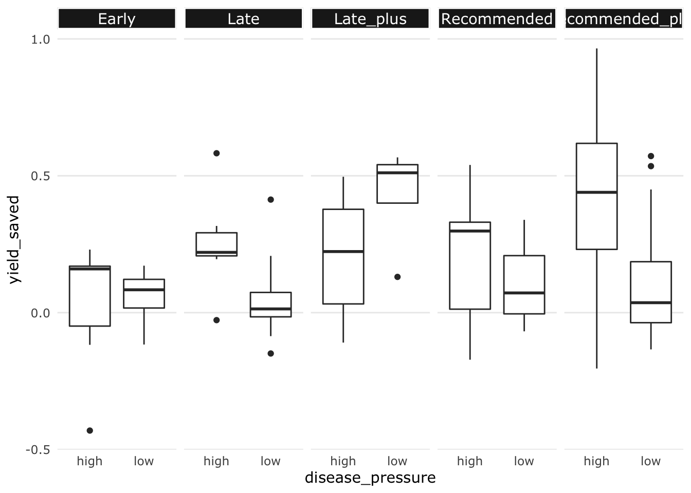
From these plots it is difficult to determine if there is an interaction between disease pressure and the yield saved, or if no interaction exists and fungicide efficacy in general has greater potential to save yield when disease pressure is higher.
It is worth noting there was not sufficient variation in the control plot disease severity to produce a medium disease severity category.
3.2.7 In-crop rainfall
3.2.7.1 Whole season
First an inspection of all rainfall within the season
source("R/add_lat_longs.R") # code adds the latitude- and longitude to PM_MB_dat
source("R/crop_rain.R")
# Obtain rainfall from bomrang
PM_MB_dat$sum_rain <-
apply(PM_MB_dat, 1, function(x) {
crop_rain(
latitude = x["lat"],
longitude = x["lon"],
start = x["planting_date"],
end = x["harvest_date"]
)
})
# plot yield vs rainfall
PM_MB_dat %>%
ggplot(aes(y = grain_yield.t.ha., x = sum_rain)) +
geom_point()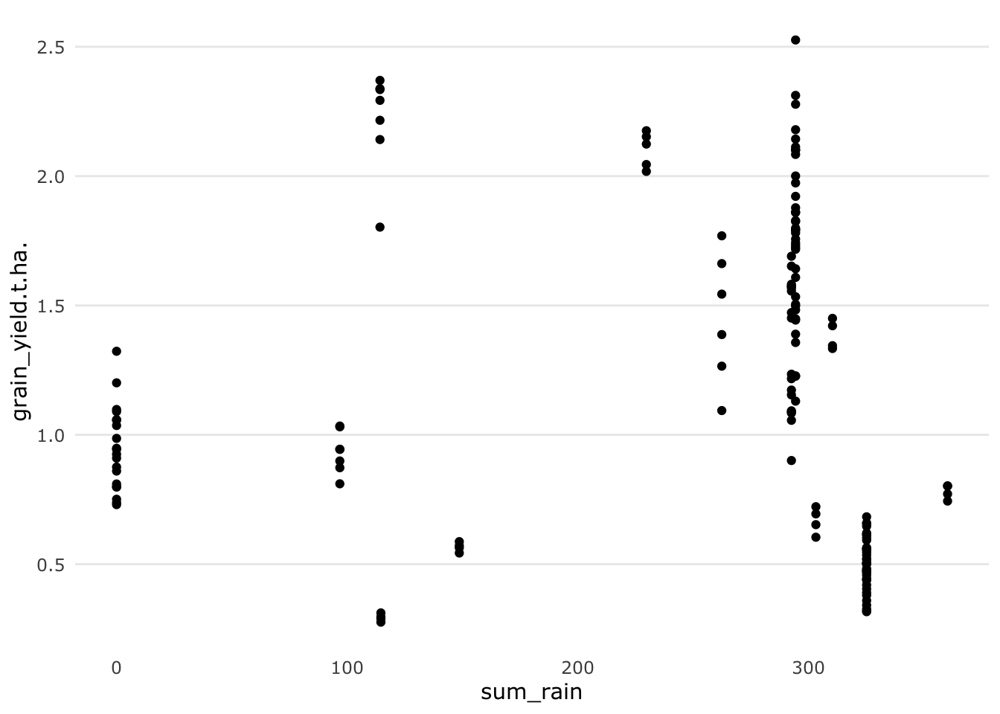
##
## Call:
## lm(formula = grain_yield.t.ha. ~ sum_rain, data = PM_MB_dat)
##
## Residuals:
## Min 1Q Median 3Q Max
## -0.89075 -0.56299 -0.08266 0.49482 1.35913
##
## Coefficients:
## Estimate Std. Error t value Pr(>|t|)
## (Intercept) 1.166e+00 1.128e-01 10.339 <2e-16 ***
## sum_rain 2.873e-06 4.260e-04 0.007 0.995
## ---
## Signif. codes: 0 '***' 0.001 '**' 0.01 '*' 0.05 '.' 0.1 ' ' 1
##
## Residual standard error: 0.6096 on 159 degrees of freedom
## Multiple R-squared: 2.861e-07, Adjusted R-squared: -0.006289
## F-statistic: 4.549e-05 on 1 and 159 DF, p-value: 0.9946
3.2.7.2 Early-season rainfall
Here we only look at the effect of rainfall between the planting date and first sign of disease. We are choosing first sign of disease as a mid point in the crop maturity.
PM_MB_dat$early_rain <-
apply(PM_MB_dat, 1, function(x) {
crop_rain(
latitude = x["lat"],
longitude = x["lon"],
start = x["planting_date"],
end = x["first_sign_disease"]
)
})
PM_MB_dat %>%
ggplot(aes(y = grain_yield.t.ha., x = early_rain)) +
geom_point()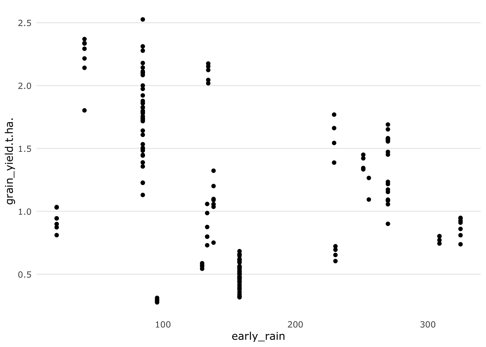
##
## Call:
## lm(formula = grain_yield.t.ha. ~ early_rain, data = PM_MB_dat)
##
## Residuals:
## Min 1Q Median 3Q Max
## -1.01870 -0.56801 0.03906 0.49029 1.20846
##
## Coefficients:
## Estimate Std. Error t value Pr(>|t|)
## (Intercept) 1.500240 0.098742 15.194 < 2e-16 ***
## early_rain -0.002151 0.000564 -3.814 0.000196 ***
## ---
## Signif. codes: 0 '***' 0.001 '**' 0.01 '*' 0.05 '.' 0.1 ' ' 1
##
## Residual standard error: 0.5835 on 159 degrees of freedom
## Multiple R-squared: 0.0838, Adjusted R-squared: 0.07804
## F-statistic: 14.54 on 1 and 159 DF, p-value: 0.0001956There is a significant negative association here, indicating rain fall early in the crop development negativley affects mungbean yields. However the very low R-squared value indicates it is no a strong one.
3.2.7.3 Late-season rainfall
Here we only look at the effect of rainfall between the first sign of disease and crop harvest.
PM_MB_dat$late_rain <-
apply(PM_MB_dat, 1, function(x) {
crop_rain(
latitude = x["lat"],
longitude = x["lon"],
start = x["first_sign_disease"],
end = x["harvest_date"]
)
})
PM_MB_dat %>%
ggplot(aes(y = grain_yield.t.ha., x = late_rain)) +
geom_point()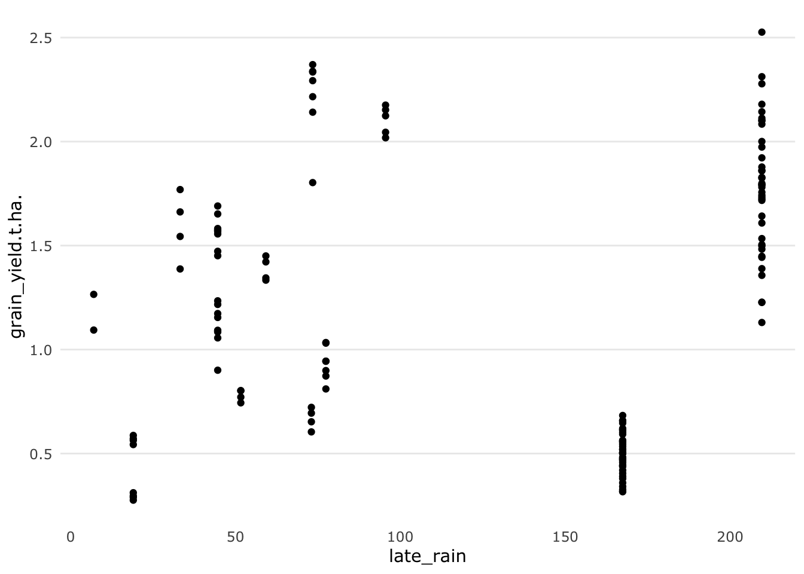
##
## Call:
## lm(formula = grain_yield.t.ha. ~ late_rain, data = PM_MB_dat)
##
## Residuals:
## Min 1Q Median 3Q Max
## -0.92338 -0.58308 0.00757 0.49847 1.24904
##
## Coefficients:
## Estimate Std. Error t value Pr(>|t|)
## (Intercept) 1.0284321 0.0798736 12.876 <2e-16 ***
## late_rain 0.0012619 0.0005857 2.155 0.0327 *
## ---
## Signif. codes: 0 '***' 0.001 '**' 0.01 '*' 0.05 '.' 0.1 ' ' 1
##
## Residual standard error: 0.6009 on 159 degrees of freedom
## Multiple R-squared: 0.02837, Adjusted R-squared: 0.02226
## F-statistic: 4.642 on 1 and 159 DF, p-value: 0.0327There is a significant positive association here, indicating rainfall after disease commences is likely to lead to increased yield. However the very low R-squared value indicates it is no a strong one.
3.2.7.4 Mid-season rainfall
Here we only look at the effect of rainfall between the 20 days after planting and 80 days after planting.
PM_MB_dat$mid_rain <-
apply(PM_MB_dat, 1, function(x) {
crop_rain(
latitude = x["lat"],
longitude = x["lon"],
start = ymd(x["planting_date"]) + days(20),
end = ymd(x["planting_date"]) + days(80)
)
})
PM_MB_dat %>%
ggplot(aes(y = grain_yield.t.ha., x = mid_rain)) +
geom_point()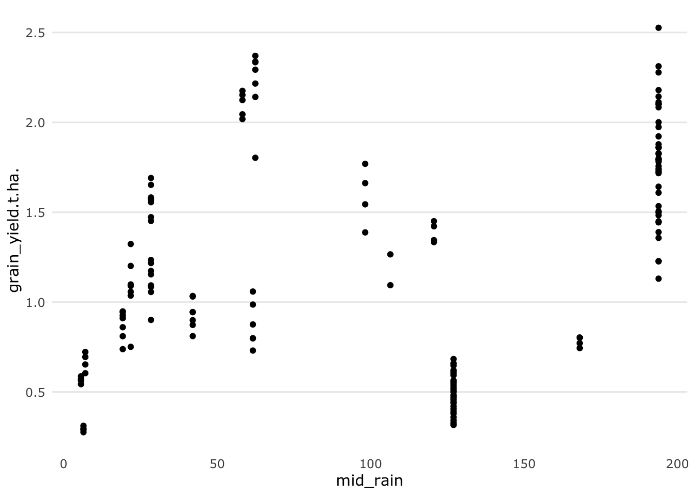
##
## Call:
## lm(formula = grain_yield.t.ha. ~ mid_rain, data = PM_MB_dat)
##
## Residuals:
## Min 1Q Median 3Q Max
## -0.89796 -0.55766 -0.03466 0.49370 1.33129
##
## Coefficients:
## Estimate Std. Error t value Pr(>|t|)
## (Intercept) 0.9697085 0.1179043 8.225 6.58e-14 ***
## mid_rain 0.0010830 0.0005922 1.829 0.0693 .
## ---
## Signif. codes: 0 '***' 0.001 '**' 0.01 '*' 0.05 '.' 0.1 ' ' 1
##
## Residual standard error: 0.6033 on 159 degrees of freedom
## Multiple R-squared: 0.0206, Adjusted R-squared: 0.01444
## F-statistic: 3.344 on 1 and 159 DF, p-value: 0.06932There is no association with mid season rain and crop yields.
******
3.2.8 FAO mungbean data
An important consideration for why to carry out work on mungbean diseases is the value the crop provides. Let’s pull in data from the FAOSTAT website for the area of mungbean crops harvested.
## 'data.frame': 473 obs. of 15 variables:
## $ Domain.Code : chr "QC" "QC" "QC" "QC" ...
## $ Domain : chr "Crops" "Crops" "Crops" "Crops" ...
## $ Area.Code : int 10 10 10 10 10 10 10 10 10 10 ...
## $ Area : chr "Australia" "Australia" "Australia" "Australia" ...
## $ Element.Code : int 5312 5419 5510 5312 5419 5510 5312 5419 5510 5312 ...
## $ Element : chr "Area harvested" "Yield" "Production" "Area harvested" ...
## $ Item.Code : int 176 176 176 176 176 176 176 176 176 176 ...
## $ Item : chr "Beans, dry" "Beans, dry" "Beans, dry" "Beans, dry" ...
## $ Year.Code : int 1961 1961 1961 1962 1962 1962 1963 1963 1963 1964 ...
## $ Year : int 1961 1961 1961 1962 1962 1962 1963 1963 1963 1964 ...
## $ Unit : chr "ha" "hg/ha" "tonnes" "ha" ...
## $ Value : int 809 5525 447 809 11001 890 2023 5151 1042 1214 ...
## $ Flag : chr "" "Fc" "" "" ...
## $ Flag.Description: chr "Official data" "Calculated data" "Official data" "Official data" ...
## $ Note : logi NA NA NA NA NA NA ...beans %>%
filter(Item == "Beans, dry",
Element == "Area harvested") %>%
select(Year, Value) %>%
ggplot(aes(y = Value, x = Year)) +
geom_point() +
geom_smooth()## `geom_smooth()` using method = 'loess' and formula 'y ~ x'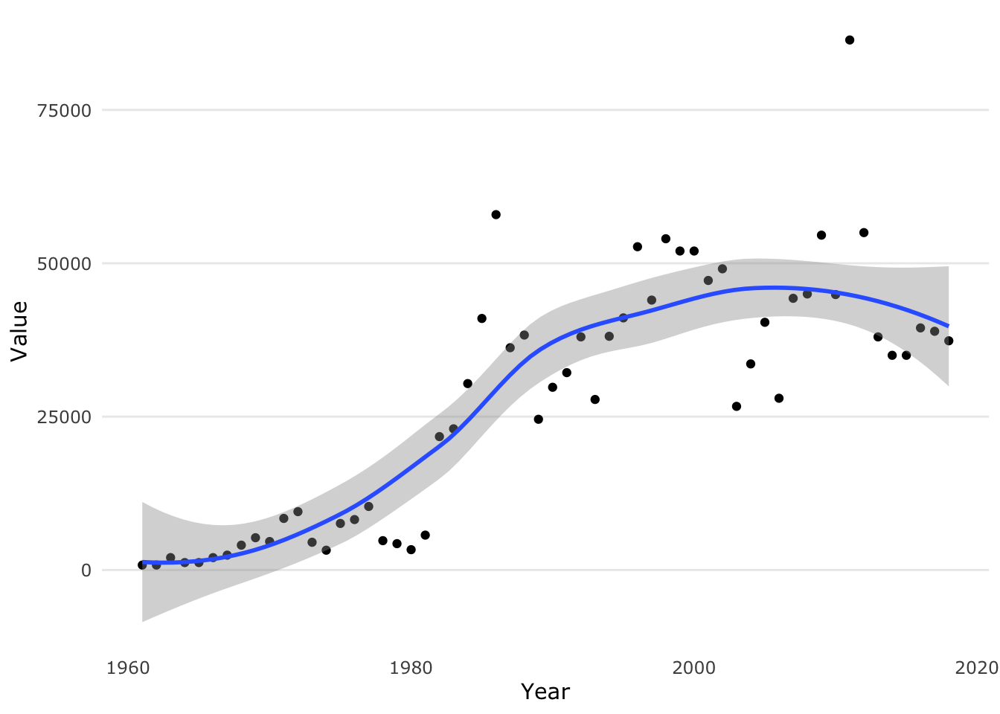
References
Thompson, Sue. 2016. “Mungbeans Vs Fungus: Two Sprays for Optimum Control - Grains Research and Development Corporation.” Ground Cover, September. https://grdc.com.au/resources-and-publications/groundcover/ground-cover-issue-124-septemberoctober-2016/mungbeans-vs-fungus-two-sprays-for-optimum-control.